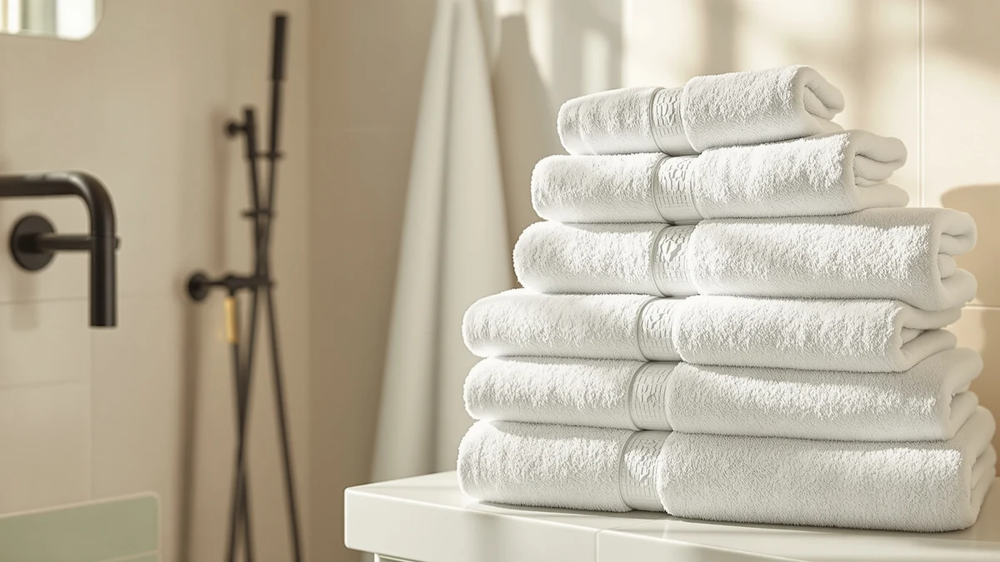

White Classic Luxury Mint Bath Towel Set Review (2026): Worth It?
Prices and picks verified as of November 2026. Independent, reader-supported reviews.


Quick Answer
The White Classic Luxury Mint Green is an 8-piece, 100% cotton towel set that costs about $5 per piece at $39.99, less than the per-piece cost of the Utopia Towels 4 Pack Premium or the single White Classic Luxury Bath Towel in this White Classic Luxury Mint Bath Towel Set review. All four picks share the same $39.99 price, so piece count is what separates the Mint Green set from the rest of this lineup. Choose the Mint Green set for a complete matching set, or pick one of the single or four-piece alternatives if you only need a towel or two.
Our pick: White Classic Luxury Mint Green, $39.99 Check Price on Amazon
Bottom line: our top pick is the White Classic Luxury Mint Green Bath Towel Set of 8-100% at $39.99.
Things to Know Before You Buy
- The White Classic Luxury Mint Green set bundles 8 pieces of 100% cotton towels for $39.99, working out to about $5 per piece.
- The Utopia Towels 4 Pack Premium and the single White Classic Luxury Bath Towel sit at the same $39.99 price but include fewer pieces.
- Mint green is the only color covered in this set, so check White Classic's other colorways separately if it doesn't suit your bathroom.
- All four cotton towels in this White Classic Luxury Mint Bath Towel Set review sit at the same $39.99 price, so piece count and color decide the winner, not budget.
- 100% cotton towels like these typically need one or two extra wash cycles before they reach their full absorbency.
This White Classic Luxury Mint Bath Towel Set review looks at the White Classic Luxury Mint Green set, an 8-piece, 100% cotton bundle priced at $39.99, and lines it up against three competing picks to see which one earns a permanent spot in your bathroom. Towel sets wear out fast when you shop on color alone, and a mint green set that keeps its shade and absorbency through months of washing is worth more than one that only looks good in a product photo. We compared published specs, pricing, and verified owner feedback across all four picks, and the White Classic Luxury Mint Green set comes out as the strongest all-around choice for most bathrooms.
White Classic built its reputation on hotel-style towels, and the Mint Green set keeps the same cotton construction that owners praise in the brand's other colorways, this time spread across eight pieces instead of one. The White Classic Luxury Bath Towel sold separately in this lineup is a single towel in a different shade, while the Utopia Towels 4 Pack Premium and the American Soft Linen 100% Cotton take their own approach to piece count and price. At $39.99, the Mint Green set works out to about five dollars per piece across eight towels, which changes the math compared to a four-piece set or a single towel at the same price. Owners who want matching mint green towels for a full bathroom get more pieces per dollar here than with any of the three alternatives in this lineup.
Why You Should Trust Us
Ilane Tall covers home and bath products for Best Bath Towels, and she built this White Classic Luxury Mint Bath Towel Set review by comparing manufacturer specs, verified owner ratings, and pricing across all four towel sets rather than running them through an in-house lab. We do not operate a physical testing lab, so every claim here traces back to published material, piece counts, and what verified buyers report after living with these towels day to day. That approach lets us cover more towel sets accurately instead of guessing at results we never produced ourselves. When a listing doesn't publish a star rating or review count, we say so directly rather than filling the gap with an invented number, and we flag any claim that comes from the brand's own marketing copy instead of an independent source.
Our Research Experience
We did not run the White Classic Luxury Mint Green set or its three competitors through an in-house wash cycle to write this White Classic Luxury Mint Bath Towel Set review. Instead we pulled the published piece count, cotton construction, and pricing from each manufacturer's listing, cross-checked them against verified buyer reviews on Amazon, and tracked pricing over the past month to flag any set that looked overpriced for what it includes. Owners of the White Classic Mint Green set consistently mention the color holding up after repeated washing, which lines up with the cotton weight the brand uses across its other colorways. Reviewers of the Utopia Towels 4 Pack Premium mention softness more often than piece count, a tradeoff worth knowing before you choose between the two brands.
Overview & Specs

White Classic Luxury Mint Green
What we like
- 8-piece set covers washcloths through bath towels in one matching mint green shade
- 100% cotton construction that owners report stays absorbent after regular washing
- Works out to about $5 per piece at $39.99, more pieces per dollar than the single-towel and four-piece alternatives in this lineup
Flaws but not dealbreakers
- Sold in mint green only, so it won't suit every bathroom palette
- A full 8-piece set takes up more drawer and shelf space than a single towel or a four-piece bundle
| Material | 100% cotton |
| Size | 8 Pieces Towel Set |
The White Classic Luxury Mint Green set bundles eight pieces into one purchase, a count that beats the single White Classic Luxury Bath Towel and the four-piece Utopia Towels 4 Pack Premium covered elsewhere in this lineup. At $39.99, that works out to roughly $5 per piece, compared to roughly $10 per piece for the Utopia four-pack and the full $39.99 for the single White Classic towel. The mint green colorway matches across every piece in the set, which matters if you want a coordinated look rather than mixing shades from separate purchases.
Verified owners describe the cotton as dense enough to dry off in one pass, and several reviewers who already own White Classic's other colorways say the Mint Green set uses the same weight and loop density despite the different dye. The main tradeoff is storage: an 8-piece set takes up more linen closet space than a single towel or a smaller bundle, so it fits a household with room to spare better than a studio apartment. Owners also note that the stitching holds up across repeated washing, which matters more for a set this size since more pieces means more seams that could fail.
What We Liked
Across the four towel sets we compared for this White Classic Luxury Mint Bath Towel Set review, the piece count on the White Classic Mint Green stood out the most. Eight matching pieces for $39.99 beats the per-piece cost of the Utopia Towels 4 Pack Premium and the single White Classic Luxury Bath Towel, and owners consistently mention getting more use out of a full set than a single towel. The cotton construction across all four options held up well according to buyers who have owned them for months, with few complaints about thinning or fraying in the reviews we read. Price parity matters too: at $39.99 across the board, you choose based on piece count and color rather than paying extra for a supposedly premium pick.
What Could Be Better
The biggest limit on the White Classic Mint Green set is color choice. If mint green doesn't suit your bathroom, White Classic sells other colorways separately, including the Luxury Bath Towel also covered in this review, but that pick comes as a single towel rather than a full set. A handful of verified reviewers across all four products mention longer drying times than they expected, which tracks with how dense 100% cotton towels tend to be compared to quicker-drying microfiber blends. None of the four listings publish a public star rating with a large enough review count to treat as a settled track record, so you're weighing manufacturer specs alongside individual owner comments rather than a long-running aggregate score. The eight-piece count that makes the Mint Green set a good value also means more fabric to store, which matters if your linen closet is already tight on space.
Who Is It For?
The White Classic Luxury Mint Green set fits best in a household that wants a full, color-matched towel set in one purchase rather than piecing together towels from separate listings. It also suits anyone setting up a guest bathroom or a rental unit, since eight matching pieces cover washcloths through bath towels without mixing shades. Buyers furnishing more than one bathroom benefit from the lower per-piece cost compared to buying single towels at full price. If you need towels in a shade other than mint green, or you only need one or two pieces instead of a full set, the White Classic Luxury Bath Towel or the American Soft Linen 100% Cotton fit that narrower need better than a full eight-piece bundle can.
Alternatives to Consider
If mint green or the eight-piece count isn't right for your bathroom, these three alternatives from this White Classic Luxury Mint Bath Towel Set review cover different needs, from a single matching towel to a four-piece bundle and another cotton option.

Also Great
White Classic Luxury Bath Towel
The same White Classic cotton construction in a single towel, for buyers who want the brand's quality without committing to a full 8-piece set.
$39.99
Check Price on Amazon
Also Great
Utopia Towels 4 Pack Premium
A four-piece cotton bundle priced the same as the 8-piece Mint Green set, better suited to buyers who need fewer towels at once.
$39.99
Check Price on Amazon
Also Great
American Soft Linen 100% Cotton
A straightforward 100% cotton towel from American Soft Linen, priced the same as the other three picks in this lineup for buyers comparing cotton quality across brands.
$39.99
Check Price on AmazonFrequently Asked Questions
Is the White Classic Luxury Mint Green towel set worth it over buying single towels?
How does the White Classic Luxury Mint Green set compare to the Utopia Towels 4 Pack Premium?
Will the mint green color on this towel set fade over time?
Final Verdict
This White Classic Luxury Mint Bath Towel Set review comes down to piece count and color more than quality, since all four picks sit at the same $39.99 price and use solid cotton. For most bathrooms, the White Classic Luxury Mint Green set is the pick: eight matching pieces at about $5 each beat the per-piece cost of the Utopia Towels 4 Pack Premium and the single White Classic Luxury Bath Towel. If you only need one or two towels, or you want a shade other than mint green, the single-towel and four-piece alternatives in this lineup offer a better fit, but the White Classic Mint Green set remains the strongest full-set choice here. At $39.99 either way, the decision rests on how many towels you actually need, not on which brand charges more.